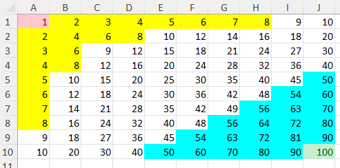
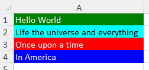
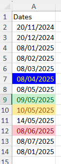
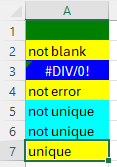

Cells and data
Cell format
XLSX.setFormat — FunctionsetFormat(sh::Worksheet, cr::String; kw...) -> ::Int
setFormat(xf::XLSXFile, cr::String; kw...) -> ::Int
setFormat(sh::Worksheet, row, col; kw...) -> ::IntSet the number format used used by a single cell, a cell range, a column range or row range or a named cell or named range in a worksheet or XLSXfile. Alternatively, specify the row and column using any combination of Integer, UnitRange, Vector{Integer} or :.
The function uses one keyword used to define a format:
format::String = nothing: Defines a built-in or custom number format
The format keyword can define some built-in formats by name:
General: specifies internal format ID 0 (General)Number: specifies internal format ID 2 (0.00)Currency: specifies internal format ID 7 ($#,##0.00_);($#,##0.00))Percentage: specifies internal format ID 9 (0%)ShortDate: specifies internal format ID 14 (m/d/yyyy)LongDate: specifies internal format ID 15 (d-mmm-yy)Time: specifies internal format ID 21 (h:mm:ss)Scientific: specifies internal format ID 48 (##0.0E+0)
If Currency is specified, Excel will use the appropriate local currency symbol.
Alternatively, format can be used to specify any custom format directly. Only weak checks are made of custom formats specified - they are otherwise added to the XLSXfile verbatim.
Formats may need characters that must be escaped when specified (see third example, below).
Examples:
julia> XLSX.setFormat(sh, "D2"; format = "h:mm AM/PM")
julia> XLSX.setFormat(xf, "Sheet1!A2"; format = "# ??/??")
julia> XLSX.setFormat(sh, "F1:F5"; format = "Currency")
julia> XLSX.setFormat(sh, "named_range"; format = "Percentage")
julia> XLSX.setFormat(sh, "A2"; format = "_-£* #,##0.00_-;-£* #,##0.00_-;_-£* \"-\"??_-;_-@_-")
XLSX.setUniformFormat — FunctionsetUniformFormat(sh::Worksheet, cr::String; kw...) -> ::Int
setUniformFormat(xf::XLSXFile, cr::String, kw...) -> ::Int
setUniformFormat(sh::Worksheet, rows, cols; kw...) -> ::IntSet the number format used by a cell range, a column range or row range or a named range in a worksheet or XLSXfile to be to be uniformly the same format. Alternatively, specify the rows and columns using any combination of Integer, UnitRange, Vector{Integer} or :.
First, the number format of the first cell in the range (the top-left cell) is updated according to the given kw... (using setFormat()). The resultant format is then applied to each remaining cell in the range.
As a result, every cell in the range will have a uniform number format.
This is functionally equivalent to applying setFormat() to each cell in the range but may be very marginally more efficient.
Applying setUniformFormat() without any keyword arguments simply copies the Format attributes from the first cell specified to all the others.
The value returned is the numfmtId of the format uniformly applied to the cells. If all cells in the range are EmptyCells, the returned value is -1.
For keyword definitions see setFormat().
Examples:
julia> XLSX.setUniformFormat(xf, "Sheet1!A2:L6"; format = "# ??/??")
julia> XLSX.setUniformFormat(sh, "F1:F5"; format = "Currency")
julia> setUniformFormat(sh, "B2,A5:D22") # Copy `Format` from B2 to cells in A5:D22
XLSX.setFont — FunctionsetFont(sh::Worksheet, cr::String; kw...) -> ::Int
setFont(xf::XLSXFile, cr::String, kw...) -> ::Int
setFont(sh::Worksheet, row, col; kw...) -> ::IntSet the font used by a single cell, a cell range, a column range or row range or a named cell or named range in a worksheet or XLSXfile. Alternatively, specify the row and column using any combination of Integer, UnitRange, Vector{Integer} or :.
Font attributes are specified using keyword arguments:
bold::Bool = nothing: set totrueto make the font bold.italic::Bool = nothing: set totrueto make the font italic.under::String = nothing: set tosingle,doubleornone.strike::Bool = nothing: set totrueto strike through the font.size::Int = nothing: set the font size (0 < size < 410).color::String = nothing: set the font color.name::String = nothing: set the font name.
Only the attributes specified will be changed. If an attribute is not specified, the current value will be retained. These are the only attributes supported currently.
No validation of the font names specified is performed. Available fonts will depend on what your system has installed. If you specify, for example, name = "badFont", that value will be written to the XLSXFile.
As an expedient to get fonts to work, the scheme attribute is simply dropped from new font definitions.
The color attribute can be defined using 8-digit rgb values.
- The first two digits represent transparency (α). Excel ignores transparency.
- The next two digits give the red component.
- The next two digits give the green component.
- The next two digits give the blue component.
So, FF000000 means a fully opaque black color.
Alternatively, you can use the name of any named color from Colors.jl (here).
Font attributes cannot be set for EmptyCells. Set a cell value first. If a cell range or column range includes any EmptyCells, they will be quietly skipped and the font will be set for the remaining cells.
For single cells, the value returned is the fontId of the font applied to the cell. This can be used to apply the same font to other cells or ranges.
For cell ranges, column ranges and named ranges, the value returned is -1.
Examples:
julia> setFont(sh, "A1"; bold=true, italic=true, size=12, name="Arial") # Single cell
julia> setFont(xf, "Sheet1!A1"; bold=false, size=14, color="yellow") # Single cell
julia> setFont(sh, "A1:B7"; name="Aptos", under="double", strike=true) # Cell range
julia> setFont(xf, "Sheet1!A1:B7"; size=24, name="Berlin Sans FB Demi") # Cell range
julia> setFont(sh, "A:B"; italic=true, color="green", under="single") # Column range
julia> setFont(xf, "Sheet1!A:B"; italic=true, color="red", under="single") # Column range
julia> setFont(xf, "Sheet1!6:12"; italic=false, color="FF8888FF", under="none") # Row range
julia> setFont(sh, "bigred"; size=48, color="FF00FF00") # Named cell or range
julia> setFont(xf, "bigred"; size=48, color="magenta") # Named cell or range
julia> setFont(sh, 1, 2; size=48, color="magenta") # row and column as integers
julia> setFont(sh, 1:3, 2; size=48, color="magenta") # row as unit range
julia> setFont(sh, 6, [2, 3, 8, 12]; size=48, color="magenta") # column as vector of indices
julia> setFont(sh, :, 2:6; size=48, color="lightskyblue2") # all rows, columns 2 to 6
XLSX.setUniformFont — FunctionsetUniformFont(sh::Worksheet, cr::String; kw...) -> ::Int
setUniformFont(xf::XLSXFile, cr::String, kw...) -> ::Int
setUniformFont(sh::Worksheet, rows, cols; kw...) -> ::IntSet the font used by a cell range, a column range or row range or a named range in a worksheet or XLSXfile to be uniformly the same font. Alternatively, specify the rows and columns using any combination of Integer, UnitRange, Vector{Integer} or :.
First, the font attributes of the first cell in the range (the top-left cell) are updated according to the given kw... (using setFont()). The resultant font is then applied to each remaining cell in the range.
As a result, every cell in the range will have a uniform font setting.
This differs from setFont() which merges the attributes defined by kw... into the font definition used by each cell individually. For example, if you set the font size to 12 for a range of cells, but these cells all use different fonts names or colors, etc, setFont() will change the font size but leave the font name and color unchanged for each cell individually.
In contrast, setUniformFont() will set the font size to 12 for the first cell, but will then apply all the font attributes from the updated first cell (ie. name, color, etc) to all the other cells in the range.
This can be more efficient when setting the same font for a large number of cells.
Applying setUniformFont() without any keyword arguments simply copies the Font attributes from the first cell specified to all the others.
The value returned is the fontId of the font uniformly applied to the cells. If all cells in the range are EmptyCells the returned value is -1.
For keyword definitions see setFont().
Examples:
julia> setUniformFont(sh, "A1:B7"; bold=true, italic=true, size=12, name="Arial") # Cell range
julia> setUniformFont(xf, "Sheet1!A1:B7"; size=24, name="Berlin Sans FB Demi") # Cell range
julia> setUniformFont(sh, "A:B"; italic=true, color="FF8888FF", under="single") # Column range
julia> setUniformFont(xf, "Sheet1!A:B"; italic=true, color="FF8888FF", under="single") # Column range
julia> setUniformFont(sh, "33"; italic=true, color="FF8888FF", under="single") # Row
julia> setUniformFont(sh, "bigred"; size=48, color="FF00FF00") # Named range
julia> setUniformFont(sh, 1, [2, 4, 6]; size=48, color="lightskyblue2") # vector of column indices
julia> setUniformFont(sh, "B2,A5:D22") # Copy `Font` from B2 to cells in A5:D22
XLSX.setBorder — FunctionsetBorder(sh::Worksheet, cr::String; kw...) -> ::Int}
setBorder(xf::XLSXFile, cr::String; kw...) -> ::Int
setBorder(sh::Worksheet, row, col; kw...) -> ::Int}Set the borders used used by a single cell, a cell range, a column range or row range or a named cell or named range in a worksheet or XLSXfile. Alternatively, specify the row and column using any combination of Integer, UnitRange, Vector{Integer} or :.
Borders are independently defined for the keywords:
left::Vector{Pair{String,String}} = nothingright::Vector{Pair{String,String}} = nothingtop::Vector{Pair{String,String}} = nothingbottom::Vector{Pair{String,String}} = nothingdiagonal::Vector{Pair{String,String}} = nothing[allsides::Vector{Pair{String,String}} = nothing][outside::Vector{Pair{String,String}} = nothing]
These represent each of the sides of a cell . The keyword diagonal defines diagonal lines running across the cell. These lines must share the same style and color in any cell.
An additional keyword, allsides, is provided for convenience. It can be used in place of the four side keywords to apply the same border setting to all four sides at once. It cannot be used in conjunction with any of the side-specific keywords or with outside but it can be used together with diagonal.
A further keyword, outside, can be used to set the outside border around a range. Any internal borders will remain unchanged. An outside border cannot be set for any non-contiguous/non-rectangular range, cannot be indexed with vectors and cannot be used in conjunction with any other keywords.
The two attributes that can be set for each keyword are style and color. Additionally, for diagonal borders, a third keyword, direction can be used.
Allowed values for style are:
nonethinmediumdasheddottedthickdoublehairmediumDasheddashDotmediumDashDotdashDotDotmediumDashDotDotslantDashDot
The color attribute can be set by specifying an 8-digit hexadecimal value in the format "FFRRGGBB". The transparency ("FF") is ignored by Excel but is required. Alternatively, you can use the name of any named color from Colors.jl (here).
Valid values for the direction keyword (for diagonal borders) are:
up: diagonal border runs bottom-left to top-rightdown: diagonal border runs top-left to bottom-rightboth: diagonal borders run both ways
Both diagonal borders share the same style and color.
Setting only one of the attributes leaves the other attributes unchanged for that side's border. Omitting one of the keywords leaves the border definition for that side unchanged, only updating the other, specified sides.
Border attributes cannot be set for EmptyCells. Set a cell value first. If a cell range or column range includes any EmptyCells, they will be quietly skipped and the border will be set for the remaining cells.
For single cells, the value returned is the borderId of the borders applied to the cell. This can be used to apply the same borders to other cells or ranges.
For cell ranges, column ranges and named ranges, the value returned is -1.
Examples:
Julia> setBorder(sh, "D6"; allsides = ["style" => "thick"], diagonal = ["style" => "hair", "direction" => "up"])
Julia> setBorder(sh, 2:45, 2:12; outside = ["style" => "thick", "color" => "lightskyblue2"])
Julia> setBorder(xf, "Sheet1!D4"; left = ["style" => "dotted", "color" => "FF000FF0"],
right = ["style" => "medium", "color" => "firebrick2"],
top = ["style" => "thick", "color" => "FF230000"],
bottom = ["style" => "medium", "color" => "goldenrod3"],
diagonal = ["style" => "dotted", "color" => "FF00D4D4", "direction" => "both"]
)
XLSX.setUniformBorder — FunctionsetUniformBorder(sh::Worksheet, cr::String; kw...) -> ::Int
setUniformBorder(xf::XLSXFile, cr::String, kw...) -> ::Int
setUniformBorder(sh::Worksheet, rows, cols; kw...) -> ::IntSet the border used by a cell range, a column range or row range or a named range in a worksheet or XLSXfile to be uniformly the same border. Alternatively, specify the rows and columns using any combination of Integer, UnitRange, Vector{Integer} or :.
First, the border attributes of the first cell in the range (the top-left cell) are updated according to the given kw... (using setBorder()). The resultant border is then applied to each remaining cell in the range.
As a result, every cell in the range will have a uniform border setting.
This differs from setBorder() which merges the attributes defined by kw... into the border definition used by each cell individually. For example, if you set the border style to thin for a range of cells, but these cells all use different border colors, setBorder() will change the border style but leave the border color unchanged for each cell individually.
In contrast, setUniformBorder() will set the border style to thin for the first cell, but will then apply all the border attributes from the updated first cell (ie. both style and color) to all the other cells in the range.
This can be more efficient when setting the same border for a large number of cells.
Applying setUniformBorder() without any keyword arguments simply copies the Border attributes from the first cell specified to all the others.
The value returned is the borderId of the border uniformly applied to the cells. If all cells in the range are EmptyCells the returned value is -1.
For keyword definitions see setBorder().
Note: setUniformBorder cannot be used with the outside keyword.
Examples:
Julia> setUniformBorder(sh, "B2:D6"; allsides = ["style" => "thick"], diagonal = ["style" => "hair"])
Julia> setUniformBorder(sh, [1, 2, 3], [3, 5, 9]; allsides = ["style" => "thick"], diagonal = ["style" => "hair", "color" => "yellow2"])
Julia> setUniformBorder(xf, "Sheet1!A1:F20"; left = ["style" => "dotted", "color" => "FF000FF0"],
right = ["style" => "medium", "color" => "FF765000"],
top = ["style" => "thick", "color" => "FF230000"],
bottom = ["style" => "medium", "color" => "FF0000FF"],
diagonal = ["style" => "none"]
)
julia> setUniformBorder(sh, "B2,A5:D22") # Copy `Border` from B2 to cells in A5:D22
XLSX.setFill — FunctionsetFill(sh::Worksheet, cr::String; kw...) -> ::Int}
setFill(xf::XLSXFile, cr::String; kw...) -> ::Int
setFill(sh::Worksheet, row, col; kw...) -> ::Int}Set the fill used used by a single cell, a cell range, a column range or row range or a named cell or named range in a worksheet or XLSXfile. Alternatively, specify the row and column using any combination of Integer, UnitRange, Vector{Integer} or :.
The following keywords are used to define a fill:
pattern::String = nothing: Sets the patternType for the fill.fgColor::String = nothing: Sets the foreground color for the fill.bgColor::String = nothing: Sets the background color for the fill.
Here is a list of the available pattern values (thanks to Copilot!):
nonesolidmediumGraydarkGraylightGraydarkHorizontaldarkVerticaldarkDowndarkUpdarkGriddarkTrellislightHorizontallightVerticallightDownlightUplightGridlightTrellisgray125gray0625
The two colors may be set by specifying an 8-digit hexadecimal value for the fgColor and/or bgColor keywords. Alternatively, you can use the name of any named color from Colors.jl (here).
Setting only one or two of the attributes leaves the other attribute(s) unchanged for that cell's fill.
Fill attributes cannot be set for EmptyCells. Set a cell value first. If a cell range or column range includes any EmptyCells, they will be quietly skipped and the fill will be set for the remaining cells.
For single cells, the value returned is the fillId of the fill applied to the cell. This can be used to apply the same fill to other cells or ranges.
For cell ranges, column ranges and named ranges, the value returned is -1.
Examples:
Julia> setFill(sh, "B2"; pattern="gray125", bgColor = "FF000000")
Julia> setFill(xf, "Sheet1!A1:F20"; pattern="none", fgColor = "darkseagreen3")
Julia> setFill(sh, "11:24"; pattern="none", fgColor = "yellow2")
XLSX.setUniformFill — FunctionsetUniformFill(sh::Worksheet, cr::String; kw...) -> ::Int
setUniformFill(xf::XLSXFile, cr::String, kw...) -> ::Int
setUniformFill(sh::Worksheet, rows, cols; kw...) -> ::IntSet the fill used by a cell range, a column range or row range or a named range in a worksheet or XLSXfile to be uniformly the same fill. Alternatively, specify the rows and columns using any combination of Integer, UnitRange, Vector{Integer} or :.
First, the fill attributes of the first cell in the range (the top-left cell) are updated according to the given kw... (using setFill()). The resultant fill is then applied to each remaining cell in the range.
As a result, every cell in the range will have a uniform fill setting.
This differs from setFill() which merges the attributes defined by kw... into the fill definition used by each cell individually. For example, if you set the fill patern to darkGrid for a range of cells, but these cells all use different fill colors, setFill() will change the fill pattern but leave the fill color unchanged for each cell individually.
In contrast, setUniformFill() will set the fill pattern to darkGrid for the first cell, but will then apply all the fill attributes from the updated first cell (ie. pattern and both foreground and background colors) to all the other cells in the range.
This can be more efficient when setting the same fill for a large number of cells.
Applying setUniformFill() without any keyword arguments simply copies the Fill attributes from the first cell specified to all the others.
The value returned is the fillId of the fill uniformly applied to the cells. If all cells in the range are EmptyCells the returned value is -1.
For keyword definitions see setFill().
Examples:
Julia> setUniformFill(sh, "B2:D4"; pattern="gray125", bgColor = "FF000000")
Julia> setUniformFill(xf, "Sheet1!A1:F20"; pattern="none", fgColor = "darkseagreen3")
julia> setUniformFill(sh, "B2,A5:D22") # Copy `Fill` from B2 to cells in A5:D22
XLSX.setAlignment — FunctionsetAlignment(sh::Worksheet, cr::String; kw...) -> ::Int}
setAlignment(xf::XLSXFile, cr::String; kw...) -> ::Int}
setAlignment(sh::Worksheet, row, col; kw...) -> ::Int}Set the alignment used used by a single cell, a cell range, a column range or row range or a named cell or named range in a worksheet or XLSXfile. Alternatively, specify the row and column using any combination of Integer, UnitRange, Vector{Integer} or :.
The following keywords are used to define an alignment:
horizontal::String = nothing: Sets the horizontal alignment.vertical::String = nothing: Sets the vertical alignment.wrapText::Bool = nothing: Determines whether the cell content wraps within the cell.shrink::Bool = nothing: Indicates whether the text should shrink to fit the cell.indent::Int = nothing: Specifies the number of spaces by which to indent the text (always from the left).rotation::Int = nothing: Specifies the rotation angle of the text in the range -90 to 90 (positive values rotate the text counterclockwise),
Here are the possible values for the horizontal alignment:
left: Aligns the text to the left of the cell.center: Centers the text within the cell.right: Aligns the text to the right of the cell.fill: Repeats the text to fill the entire width of the cell.justify: Justifies the text, spacing it out so that it spans the entire width of the cell.centerContinuous: Centers the text across multiple cells (specifically the currrent cell and all empty cells to the right) as if the text were in a merged cell.distributed: Distributes the text evenly across the width of the cell.
Here are the possible values for the vertical alignment:
top: Aligns the text to the top of the cell.center: Centers the text vertically within the cell.bottom: Aligns the text to the bottom of the cell.justify: Justifies the text vertically, spreading it out evenly within the cell.distributed: Distributes the text evenly from top to bottom in the cell.
For single cells, the value returned is the styleId of the cell.
For cell ranges, column ranges and named ranges, the value returned is -1.
Examples:
julia> setAlignment(sh, "D18"; horizontal="center", wrapText=true)
julia> setAlignment(xf, "sheet1!D18"; horizontal="right", vertical="top", wrapText=true)
julia> setAlignment(sh, "L6"; horizontal="center", rotation="90", shrink=true, indent="2")
julia> setAlignment(sh, 1:3, 3:6; horizontal="center", rotation="90", shrink=true, indent="2")
XLSX.setUniformAlignment — FunctionsetUniformAlignment(sh::Worksheet, cr::String; kw...) -> ::Int
setUniformAlignment(xf::XLSXFile, cr::String, kw...) -> ::Int
setUniformAlignment(sh::Worksheet, rows, cols; kw...) -> ::IntSet the alignment used by a cell range, a column range or row range or a named range in a worksheet or XLSXfile to be uniformly the same alignment. Alternatively, specify the rows and columns using any combination of Integer, UnitRange, Vector{Integer} or :.
First, the alignment attributes of the first cell in the range (the top-left cell) are updated according to the given kw... (using setAlignment()). The resultant alignment is then applied to each remaining cell in the range.
As a result, every cell in the range will have a uniform alignment setting.
This differs from setAlignment() which merges the attributes defined by kw... into the alignment definition used by each cell individually. For example, if you set the horizontal alignment to left for a range of cells, but these cells all use different vertical alignment or wrapText, setAlignment() will change the horizontal alignment but leave the vertical alignment and wrapText unchanged for each cell individually.
In contrast, setUniformAlignment() will set the horizontal alignment to left for the first cell, but will then apply all the alignment attributes from the updated first cell to all the other cells in the range.
This can be more efficient when setting the same alignment for a large number of cells.
Applying setUniformAlignment() without any keyword arguments simply copies the Alignment attributes from the first cell specified to all the others.
The value returned is the styleId of the reference (top-left) cell, from which the alignment uniformly applied to the cells was taken. If all cells in the range are EmptyCells, the returned value is -1.
For keyword definitions see setAlignment().
Examples:
Julia> setUniformAlignment(sh, "B2:D4"; horizontal="center", wrap = true)
Julia> setUniformAlignment(xf, "Sheet1!A1:F20"; horizontal="center", vertical="top")
Julia> setUniformAlignment(sh, :, 1:24; horizontal="center", vertical="top")
julia> setUniformAlignment(sh, "B2,A5:D22") # Copy `Alignment` from B2 to cells in A5:D22
XLSX.setUniformStyle — FunctionsetUniformStyle(sh::Worksheet, cr::String) -> ::Int
setUniformStyle(xf::XLSXFile, cr::String) -> ::Int
setUniformStyle(sh::Worksheet, rows, cols) -> ::IntSet the cell style used by a cell range, a column range or row range or a named range in a worksheet or XLSXfile to be the same as that of the first cell in the range that is not an EmptyCell. Alternatively, specify the rows and columns using any combination of Integer, UnitRange, Vector{Integer} or :.
As a result, every cell in the range will have a uniform style.
A cell style consists of the collection of format, alignment, border, font and fill.
If the first cell has no defined style (s=""), all cells will be given the same undefined style.
The value returned is the styleId of the style uniformly applied to the cells or nothing if the style is undefined. If all cells in the range are EmptyCells, the returned value is -1.
Examples:
julia> XLSX.setUniformStyle(xf, "Sheet1!A2:L6")
julia> XLSX.setUniformStyle(sh, "F1:F5")
julia> XLSX.setUniformStyle(sh, 2:5, 5)
julia> XLSX.setUniformStyle(sh, 2, :)
Conditional format
XLSX.getConditionalFormats — FunctiongetConditionalFormats(ws::Worksheet)Get the conditional formats for a worksheet.
Arguments
ws::Worksheet: The worksheet for which to get the conditional formats.
Return a vector of pairs: CellRange => NamedTuple{type::String, priority::Int}}.
XLSX.setConditionalFormat — FunctionsetConditionalFormat(ws::Worksheet, cr::String, type::Symbol; kw...) -> ::Int
setConditionalFormat(xf::XLSXFile, cr::String, type::Symbol; kw...) -> ::Int
setConditionalFormat(ws::Worksheet, rows, cols, type::Symbol; kw...) -> ::IntAdd a new conditional format to a cell range, row range or column range in a worksheet or XLSXFile. Alternatively, ranges can be specified by giving rows and columns separately.
There are many options for applying differnt types of custom format. For a basic guide, refer to the section on Conditional formats in the Formatting Guide.
The type argument specifies which of Excel's conditional format types will be applied.
Valid options for type are:
:cellIs:top10:aboveAverage:containsText:notContainsText:beginsWith:endsWith:timePeriod:containsErrors:notContainsErrors:containsBlanks:notContainsBlanks:uniqueValues:duplicateValues:dataBar:colorScale:iconSet
Keyword options differ according to the type specified, as set out below.
type = :cellIs
Defines a conditional format based on the value of each cell in a range.
Valid keywords are:
operator: Defines the comparison to make.value: defines the first value to compare against. This can be a cell reference (e.g."A1") or a number.value2: defines the second value to compare against. This can be a cell reference (e.g."A1") or a number.stopIfTrue: Stops evaluating the conditional formats for this cell if this one is true.dxStyle: Used optionally to select one of the built-in Excel formats to applyformat: defines the numFmt to apply if opting for a custom format.font: defines the font to apply if opting for a custom format.border: defines the border to apply if opting for a custom format.fill: defines the fill to apply if opting for a custom format.
All keywords are defined using Strings (e.g. value = "2" or value = "A2").
The keyword operator defines the comparison to use in the conditional formatting. If the condition is met, the format is applied. Valid options are:
greaterThan(cell >value) (default)greaterEqual(cell >=value)lessThan(cell <value)lessEqual(cell <=value)equal(cell ==value)notEqual(cell !=value)between(cell betweenvalueandvalue2)notBetween(cell not betweenvalueandvalue2)
If not specified (when required), value will be the arithmetic average of the (non-missing) cell values in the range if values are numeric. If the cell values are non-numeric, an error is thrown.
Formatting to be applied if the condition is met can be defined in one of two ways. Use the keyword dxStyle to select one of the built-in Excel formats. Valid options are:
redfilltext(light red fill, dark red text) (default)yellowfilltext(light yellow fill, dark yellow text)greenfilltext(light green fill, dark green text)redfill(light red fill)redtext(dark red text)redborder(dark red cell borders)
Alternatively, you can define a custom format by using the keywords format, font, border, and fill which each take a vector of pairs of strings. The first string is the name of the attribute to set and the second is the value to set it to. Valid attributes for each keyword are:
format:formatfont:color,bold,italic,under,strikefill:pattern,bgColor,fgColorborder:style,color
Refer to setFormat(), setFont(), setFill() and setBorder() for more details on the valid attributes and values.
Excel limits the formatting attributes that can be set in a conditional format. It is not possible to set the size or name of a font and neither is it possible to set any of the cell alignment attributes. Diagonal borders cannot be set either.
Although it is not a limitation of Excel, this function sets all the border attributes for each side of a cell to be the same.
If both dxStyle and custom formatting keywords are specified, dxStyle will be used and the custom formatting will be ignored. If neither dxStyle nor custom formatting keywords are specified, the default is dxStyle="redfilltext".
Examples
julia> XLSX.setConditionalFormat(s, "B1:B5", :cellIs) # Defaults to `operator="greaterThan"`, `dxStyle="redfilltext"` and `value` set to the arithmetic agverage of cell values in `rng`.
julia> XLSX.setConditionalFormat(s, "B1:B5", :cellIs;
operator="between",
value="2",
value2="3",
fill = ["pattern" => "none", "bgColor"=>"FFFFC7CE"],
format = ["format"=>"0.00%"],
font = ["color"=>"blue", "bold"=>"true"]
)
julia> XLSX.setConditionalFormat(s, "B1:B5", :cellIs;
operator="greaterThan",
value="4",
fill = ["pattern" => "none", "bgColor"=>"green"],
format = ["format"=>"0.0"],
font = ["color"=>"red", "italic"=>"true"]
)
julia> XLSX.setConditionalFormat(s, "B1:B5", :cellIs;
operator="lessThan",
value="2",
fill = ["pattern" => "none", "bgColor"=>"yellow"],
format = ["format"=>"0.0"],
font = ["color"=>"green"],
border = ["style"=>"thick", "color"=>"coral"]
)
type = :top10
This conditional format can be used to highlight cells in the top (bottom) n within the range or in the top (bottom) n% (ie in the top 5 or in the top 5% of values in the range).
The available keywords are:
operator: Defines the comparison to make.value: Gives the for comparison or a cell reference (e.g."A1").stopIfTrue: Stops evaluating the conditional formats if this one is true.dxStyle: Used optionally to select one of the built-in Excel formats to apply.format: defines the numFmt to apply if opting for a custom format.font: defines the font to apply if opting for a custom format.border: defines the border to apply if opting for a custom format.fill: defines the fill to apply if opting for a custom format.
Valid values for the operator keyword are the following:
topN(cell is in the top n (=value) values of the range)bottomN(cell is in the bottom n (=value) values of the range)topN%(cell is in the top n% (=value) values of the range)bottomN%(cell is in the bottom n% (=value) values of the range)
Default keyowrds are operator="TopN" and value="10".
Multiple conditional formats may be applied to the same or overlapping cell ranges. If stopIfTrue=true the first condition that is met will be applied but all subsequent conditional formats for that cell will be skipped. If stopIfTrue=false (default) all relevant conditional formats will be applied to the cell in turn.
For example usage of the stopIfTrue keyword, refer to Overlaying conditional formats in the Formatting Guide.
The remaining keywords are defined as above for type = :cellIs.
Examples
julia> f=XLSX.newxlsx()
XLSXFile("C:\...\blank.xlsx") containing 1 Worksheet
sheetname size range
-------------------------------------------------
Sheet1 1x1 A1:A1
julia> s=f[1]
1×1 XLSX.Worksheet: ["Sheet1"](A1:A1)
julia> for i=1:10;for j=1:10; s[i,j]=i*j;end;end
julia> s[:]
10×10 Matrix{Any}:
1 2 3 4 5 6 7 8 9 10
2 4 6 8 10 12 14 16 18 20
3 6 9 12 15 18 21 24 27 30
4 8 12 16 20 24 28 32 36 40
5 10 15 20 25 30 35 40 45 50
6 12 18 24 30 36 42 48 54 60
7 14 21 28 35 42 49 56 63 70
8 16 24 32 40 48 56 64 72 80
9 18 27 36 45 54 63 72 81 90
10 20 30 40 50 60 70 80 90 100
julia> XLSX.setConditionalFormat(s, "A1:J10", :top10; operator="bottomN", value="1", stopIfTrue="true", dxStyle="redfilltext")
0
julia> XLSX.setConditionalFormat(s, "A1:J10", :top10; operator="topN", value="1", stopIfTrue="true", dxStyle="greenfilltext")
0
julia> XLSX.setConditionalFormat(s, "A1:J10", :top10;
operator="topN%",
value="20",
fill=["pattern"=>"solid", "bgColor"=>"cyan"])
0
julia> XLSX.setConditionalFormat(s, "A1:J10", :top10;
operator="bottomN%",
value="20",
fill=["pattern"=>"solid", "bgColor"=>"yellow"])
0

type = :aboveAverage
This conditional format can be used to compare cell values in the range with the average value for the range.
The available keywords are:
operator: Defines the comparison to make.stopIfTrue: Stops evaluating the conditional formats if this one is true.dxStyle: Used optionally to select one of the built-in Excel formats to apply.format: defines the numFmt to apply if opting for a custom format.font: defines the font to apply if opting for a custom format.border: defines the border to apply if opting for a custom format.fill: defines the fill to apply if opting for a custom format.
Valid values for the operator keyword are the following:
aboveAverage(cell is above the average of the range) (default)aboveEqAverage(cell is above or equal to the average of the range)plus1StdDev(cell is above the average of the range + 1 standard deviation)plus2StdDev(cell is above the average of the range + 2 standard deviations)plus3StdDev(cell is above the average of the range + 3 standard deviations)belowAverage(cell is below the average of the range)belowEqAverage(cell is below or equal to the average of the range)minus1StdDev(cell is below the average of the range - 1 standard deviation)minus2StdDev(cell is below the average of the range - 2 standard deviations)minus3StdDev(cell is below the average of the range - 3 standard deviations)
The remaining keywords are defined as above for type = :cellIs.
Examples
julia> using Random, Distributions
julia> d=Normal()
Normal{Float64}(μ=0.0, σ=1.0)
julia> columns=rand(d,1000)
1000-element Vector{Float64}:
-1.5515478694605092
0.36859583733587165
1.5349535865662158
-0.2352610551087202
0.12355875388105911
0.5859222303845908
-0.6326662651426166
1.0610118292961683
-0.7891578831398097
0.031022172414689787
-0.5534440118018843
-2.3538883599955023
⋮
0.4813001892130465
0.03871017417416217
0.7224728281160403
-1.1265372949908539
1.5714393857211955
0.31438739499933255
0.4852591013082452
0.5363388236349432
1.1268430910133729
0.7691442442244849
1.0061732938516454
julia> f=XLSX.newxlsx()
XLSXFile("C:\...\blank.xlsx") containing 1 Worksheet
sheetname size range
-------------------------------------------------
Sheet1 1x1 A1:A1
julia> s=f[1]
1×1 XLSX.Worksheet: ["Sheet1"](A1:A1)
julia> XLSX.writetable!(s, [columns], ["normal"])
julia> XLSX.setConditionalFormat(s, "A2:A1001", :aboveAverage ;
operator="plus3StdDev",
stopIfTrue="true",
fill = ["pattern"=>"solid", "bgColor"=>"red"],
font = ["color"=>"white", "bold"=>"true"])
0
julia> XLSX.setConditionalFormat(s, "A2:A1001", :aboveAverage ;
operator="minus3StdDev",
stopIfTrue="true",
fill = ["pattern"=>"solid", "bgColor"=>"red"],
font = ["color"=>"white", "bold"=>"true"])
0
julia> XLSX.setConditionalFormat(s, "A2:A1001", :aboveAverage ;
operator="plus2StdDev",
stopIfTrue="true",
fill = ["pattern"=>"solid", "bgColor"=>"tomato"],
font = ["color"=>"white", "bold"=>"true"])
0
julia> XLSX.setConditionalFormat(s, "A2:A1001", :aboveAverage ;
operator="minus2StdDev",
stopIfTrue="true",
fill = ["pattern"=>"solid", "bgColor"=>"tomato"],
font = ["color"=>"white", "bold"=>"true"])
0
julia> XLSX.setConditionalFormat(s, "A2:A1001", :aboveAverage ;
operator="minus1StdDev",
stopIfTrue="true",
fill = ["pattern"=>"solid", "bgColor"=>"pink"],
font = ["color"=>"white", "bold"=>"true"])
0
julia> XLSX.setConditionalFormat(s, "A2:A1001", :aboveAverage ;
operator="plus1StdDev",
stopIfTrue = "true",
fill = ["pattern"=>"solid", "bgColor"=>"pink"],
font = ["color"=>"white", "bold"=>"true"])
0
julia> XLSX.setConditionalFormat(s, "A2:A1001", :aboveAverage ;
operator="belowEqAverage",
fill = ["pattern"=>"solid", "bgColor"=>"green"],
font = ["color"=>"white", "bold"=>"true"])
0
julia> XLSX.setConditionalFormat(s, "A2:A1001", :aboveAverage ;
operator="aboveEqAverage",
fill = ["pattern"=>"solid", "bgColor"=>"green"],
font = ["color"=>"white", "bold"=>"true"])
0
type = :containsText, :notContainsText, :beginsWith or :endsWith
Highlight cells in the range that contain (or do not contain), begin or end with a specific text string. The default is containsText.
Valid keywords are:
value: Gives the literal text to match or provides a cell reference (e.g."A1").stopIfTrue: Stops evaluating the conditional formats if this one is true.dxStyle: Used optionally to select one of the built-in Excel formats to apply.format: defines the numFmt to apply if opting for a custom format.font: defines the font to apply if opting for a custom format.border: defines the border to apply if opting for a custom format.fill: defines the fill to apply if opting for a custom format.
The keyword value gives the literal text to compare (eg. "Hello World") or provides a cell reference (e.g. "A1"). It is a required keyword with no default value.
The remaining keywords are optional and are defined as above for type = :cellIs.
Examples
julia> s[:]
4×1 Matrix{Any}:
"Hello World"
"Life the universe and everything"
"Once upon a time"
"In America"
julia> XLSX.setConditionalFormat(s, "A1:A4", :containsText;
value="th",
fill = ["pattern"=>"solid", "bgColor"=>"cyan"],
font = ["color"=>"black", "bold"=>"true"])
0
julia> XLSX.setConditionalFormat(s, "A1:A4", :notContainsText;
value="i",
fill = ["pattern"=>"solid", "bgColor"=>"green"],
font = ["color"=>"white", "bold"=>"true"])
0
julia> XLSX.setConditionalFormat(s, "A1:A4", :beginsWith ;
value="On",
fill = ["pattern"=>"solid", "bgColor"=>"red"],
font = ["color"=>"white", "bold"=>"true"])
0
julia> XLSX.setConditionalFormat(s, "A1:A4", :endsWith ;
value="ica",
fill = ["pattern"=>"solid", "bgColor"=>"blue"],
font = ["color"=>"white", "bold"=>"true"])
0

type = :timePeriod
When cells contain dates, this conditional format can be used to highlight cells. The available keywords are:
operator: Defines the comparison to make.stopIfTrue: Stops evaluating the conditional formats if this one is true.dxStyle: Used optionally to select one of the built-in Excel formats to applyformat: defines the numFmt to apply if opting for a custom format.font: defines the font to apply if opting for a custom format.border: defines the border to apply if opting for a custom format.fill: defines the fill to apply if opting for a custom format.
Valid values for the keyword operator are the following:
yesterdaytodaytomorrowlast7Days(default)lastWeekthisWeeknextWeeklastMonththisMonthnextMonth
The remaining keywords are defined as above for type = :cellIs.
Examples
julia> s[1:13, 1]
13×1 Matrix{Any}:
"Dates"
2024-11-20
2024-12-20
2025-01-08
2025-02-08
2025-03-08
2025-04-08
2025-05-08
2025-05-09
2025-05-10
2025-05-14
2025-06-08
2025-07-08
julia> XLSX.setConditionalFormat(s, "A1:A13", :timePeriod; operator="today", dxStyle = "greenfilltext")
0
julia> XLSX.setConditionalFormat(s, "A1:A13", :timePeriod; operator="tomorrow", dxStyle = "yellowfilltext")
0
julia> XLSX.setConditionalFormat(s, "A1:A13", :timePeriod; operator="nextMonth", dxStyle = "redfilltext")
0
julia> XLSX.setConditionalFormat(s, "A1:A13", :timePeriod;
operator="lastMonth",
fill = ["pattern"=>"solid", "bgColor"=>"blue"],
font = ["color"=>"yellow", "bold"=>"true"])
0

type = :containsErrors, :notContainsErrors, :containsBlanks, :notContainsBlanks, :uniqueValues or :duplicateValues
These conditional formatting options highlight cells that contain or don't contain errors, are blank (default) or not blank, are unique in the range or are duplicates within the range. The available keywords are:
stopIfTrue: Stops evaluating the conditional formats if this one is true.dxStyle: Used optionally to select one of the built-in Excel formats to applyformat: defines the numFmt to apply if opting for a custom format.font: defines the font to apply if opting for a custom format.border: defines the border to apply if opting for a custom format.fill: defines the fill to apply if opting for a custom format.
These keywords are defined as above for the :cellIs conditional format type.
Examples
julia> XLSX.setConditionalFormat(s, "A1:A7", :containsErrors;
stopIfTrue="true",
fill = ["pattern"=>"solid", "bgColor"=>"blue"],
font = ["color"=>"white", "bold"=>"true"])
0
julia> XLSX.setConditionalFormat(s, "A1:A7", :containsBlanks;
stopIfTrue="true",
fill = ["pattern"=>"solid", "bgColor"=>"green"],
font = ["color"=>"black", "bold"=>"true"])
0
julia> XLSX.setConditionalFormat(s, "A1:A7", :uniqueValues;
stopIfTrue="true",
fill = ["pattern"=>"solid", "bgColor"=>"yellow"],
font = ["color"=>"black", "bold"=>"true"])
0
julia> XLSX.setConditionalFormat(s, "A1:A7", :duplicateValues;
fill = ["pattern"=>"solid", "bgColor"=>"cyan"],
font = ["color"=>"black", "bold"=>"true"])
0

type = :expressiom
Set a conditional format when an expression evaluated in each cell is true.
The available keywords are:
formula: Specifies the formula to use. This must be a valid Excel formula.stopIfTrue: Stops evaluating the conditional formats if this one is true.dxStyle: Used optionally to select one of the built-in Excel formats to applyformat: defines the numFmt to apply if opting for a custom format.font: defines the font to apply if opting for a custom format.border: defines the border to apply if opting for a custom format.fill: defines the fill to apply if opting for a custom format.
The keyword formula is required and there is no default value. Formulae must be valid Excel formulae and written in US english with comma separators. Cell references may be absolute or relative references in either the row or the column or both.
The remaining keywords are defined as above for type = :cellIs.
Examples
julia> XLSX.setConditionalFormat(s, "A1:C4", :expression; formula = "A1 < 16", dxStyle="greenfilltext")
julia> XLSX.setConditionalFormat(s, 1:5, 1:4, :expression;
formula="A1=1",
fill=["pattern" => "none", "bgColor" => "yellow"],
format=["format" => "0.0"],
font=["color" => "green"],
border=["style" => "thick", "color" => "coral"]
)
julia> XLSX.setConditionalFormat(s, "B2:D11", :expression; formula = "average(B$2:B$11) > average(A$2:A$11)", dxStyle = "greenfilltext")
julia> XLSX.setConditionalFormat(s, "A1:E5", :expression; formula = "E5<50", dxStyle = "redfilltext")
type = :dataBar
Apply data bars to cells in a range depending on their values. The keyword databar can be used to select one of 12 built-in databars Excel provides by name. Valid names are:
bluegrad(default)greengradredgradorangegradlightbluegradpurplegradbluegreenredorangelightbluepurple
The first six (with a grad suffix) yield bars with a color gradient while the remainder yield bars of solid color. By default, all built in data bars define their range from the minumum and maximum values in the range and negative values are given a red bar. These default settings can each be modified using the other keyword options available.
Remaining keyword options provided are:
showVal- set to "false" to show databars only and hide cell valuesgradient- set to "false" to use a solid color bar rather than a gradient fillborders- set to "true" to show borders around each barsameNegFill- set to "true" to use the same fill color on negative bars as positive.sameNegBorders- set to "false" to use the same border color on negative bars as positivedirection- determines the direction of the bars from the axis, "leftToRight" or "rightToLeft"min_type- Defines how the minimum of the bar scale is defined ("num", "min", "percent", percentile", "formula" or "automatic")min_val- Defines the minimum value for the data bar scale. May be a number(as a string), a cell reference or a formula (if type="formula").max_type- Defines how the maximum of the bar scale is defined ("num", "max", "percent", percentile", "formula" or "automatic")max_val- Defines the maximum value for the data bar scale. May be a number(as a string), a cell reference or a formula (if type="formula").fill_col- Defines the color of the fill for positive bars (8 digit hex or by name)border_col- Defines the color of the border for positive bars (8 digit hex or by name)neg_fill_col- Defines the color of the fill for negative bars (8 digit hex or by name)neg_border_col- Defines the color of the border for negative bars (8 digit hex or by name)axis_pos- Defines the position of the axis ("middle" or "none")axis_col- Defines the color of the axis (8 digit hex or by name)
Examples
julia> XLSX.setConditionalFormat(s, "A1:A11", :dataBar)
julia> XLSX.setConditionalFormat(s, "B1:B11", :dataBar; databar="purple")
julia> XLSX.setConditionalFormat(s, "D1:D11", :dataBar;
gradient="true",
direction="rightToLeft",
axis_pos="none",
showVal="false"
)
jjulia> XLSX.setConditionalFormat(s, "F1:F11", :dataBar;
gradient="false",
sameNegFill="true",
sameNegBorders="true"
)
julia> XLSX.setConditionalFormat(f, "Sheet1!G1:G11", :dataBar;
fill_col="coral", border_col = "cyan",
neg_fill_col="cyan", neg_border_col = "coral"
)
julia> XLSX.setConditionalFormat(f, "Sheet1!J1:J11", :dataBar; axis_col="magenta")
julia> XLSX.setConditionalFormat(s, 15:25, 1, :dataBar;
min_type="least", max_type="highest"
)
julia> XLSX.setConditionalFormat(s, 15:25, 2, :dataBar;
databar="purple",
min_type="percent", max_type="percent",
min_val="20", max_val="60"
)
julia> XLSX.setConditionalFormat(s, "C15:C25", :dataBar;
databar="blue",
min_type="num", max_type="num",
min_val="-1", max_val="6",
gradient="true",
direction="leftToRight",
axis_pos="none"
)
julia> XLSX.setConditionalFormat(s, "E15:E25", :dataBar;
gradient="true",
min_type="percentile", max_type="percentile",
min_val="20", max_val="80",
direction="rightToLeft",
axis_pos="middle"
)
julia> XLSX.setConditionalFormat(s, "G15:G25", :dataBar;
min_type="num", max_type="formula",
min_val="$L$1", max_val="$M$1 * $N$1 + 3",
fill_col="coral", border_col = "cyan",
neg_fill_col="cyan", neg_border_col = "coral"
)
type = :colorScale
Define a 2-color or 3-color colorscale conditional format.
Use the keyword colorscale to choose one of the 12 built-in Excel colorscales:
"redyellowgreen": Red, Yellow, Green 3-color scale."greenyellowred": Green, Yellow, Red 3-color scale."redwhitegreen": Red, White, Green 3-color scale."greenwhitered": Green, White, Red 3-color scale."redwhiteblue": Red, White, Blue 3-color scale."bluewhitered": Blue, White, Red 3-color scale."redwhite": Red, White 2-color scale."whitered": White, Red 2-color scale."whitegreen": White, Green 2-color scale."greenwhite": Green, White 2-color scale."yellowgreen": Yellow, Green 2-color scale."greenyellow": Green, Yellow 2-color scale (default).
Alternatively, you can define a custom color scale by omitting the colorscale keyword and instead using the following keywords:
min_type: The type of the minimum value. Valid values are:min,percentile,percent,numorformula.min_val: The value of the minimum. Omit ifmin_type="min".min_col: The color of the minimum value.mid_type: Valid values are:percentile,percent,numorformula. Omit for a 2-color scale.mid_val: The value of the scale mid point. Omit for a 2-color scale.mid_col: The color of the mid point. Omit for a 2-color scale.max_type: The type of the maximum value. Valid values are:max,percentile,percent,numorformula.max_val: The value of the maximum value. Omit ifmax_type="max".max_col: The color of the maximum value.
The keywords min_val, mid_val, and max_val can be a number or cell reference (e.g. "$A$1") for any value of the related type keyword or, if the related type keyword is set to formula, may be a valid Excel formula that calculates a number. Cell references used in a formula must be specified as absolute references.
Colors can be specified using an 8-digit hex string (e.g. FF0000FF for blue) or any named color from Colors.jl.
Examples
julia> XLSX.setConditionalFormat(f["Sheet1"], "A1:F12", :colorScale) # Defaults to the `greenyellow` built-in scale.
0
julia> XLSX.setConditionalFormat(f["Sheet1"], "A13:C18", :colorScale; colorscale="whitered")
0
julia> XLSX.setConditionalFormat(f["Sheet1"], "D13:F18", :colorScale; colorscale="bluewhitered")
0
julia> XLSX.setConditionalFormat(f["Sheet1"], "A13:F22", :colorScale;
min_type="num",
min_val="2",
min_col="tomato",
mid_type="num",
mid_val="6",
mid_col="lawngreen",
max_type="num",
max_val="10",
max_col="cadetblue"
)
0
type = :iconSet
Apply a set of icons to cells in a range depending on their values. The keyword iconset can be used to select one of 20 built-in icon sets Excel provides by name. Valid names are:
3Arrows5ArrowsGray3TrafficLights(default)3Flags5Quarters4Rating5Rating3Symbols3Symbols23Signs3TrafficLights24TrafficLights4BlackToRed4Arrows5Arrows3ArrowsGray4ArrowsGray3Triangles3Stars5Boxes
The digit prefix to the name indicates how many icons there are in a set, and therefore how the cell values with be binned by value. Bin boundaries may optionally be specified by the following keywords to override the default values for each icon set:
min_type= "percent" (default), "percentile", "num" or "formula"min_val(default: "33" (3 icons), "25" (4 icons) or "20" (5 icons))mid_type= "percent" (default), "percentile", "num" or "formula"mid_val(default: "50" (4 icons), "40" (5 icons))mid2_type= "percent" (default), "percentile", "num" or "formula"mid2_val(default: "60" (5 icons))max_type= "percent" (default), "percentile", "num" or "formula"max_val(default: "67" (3 icons), "75" (4 icons) or "80" (5 icons))
The keywords min_val, mid_val, mid2_val and max_val may contain numbers (as strings) or valid cell references. If formula is specified for the related type keyword, a valid Excel formula can be provided to evaluate to the bin threshold value to be used. Three-icon sets require two thresholds (min_type/min_val and max_type/max_val), four-icon sets require three thresholds (with the addition of mid_type/mid_val) and five-icon sets require four thresholds (adding mid2_type/mid2_val). Thresholds defined (using val and type keywords) that are unnecessary are simply ignored.
Each value can be tested using >= (default) or >. To change from the default, optionally set min_gte, mid_gte, mid2_gte and/or max_gte to "false" to use > in the comparison. Any other value for these gte keywords will be ignored and the default >= comparison used.
The built-in icon sets Excel provides are composed of 52 individual icons. It is possible to mix and match any of these to make a custom 3-icon, 4-icon or 5-icon set by specifying iconset = "Custom". The number of icons in the set will be determined by whether the mid_val/mid_type keywords and mid2_val/mid2_type keywords are provided.
The icons that will be used in a Custom iconset are defined using the icon_list keyword which takes a vector of integers in the range from 1 to 52. For a key relating integers to the icons they represent, see the Icon Set section in the Formatting Guide.
The order in which the symbols are appiled can be reversed from the default order (or, for Custom icon sets, the order given in icon_list), by optionally setting reverse = "true". Any other value provided for reverse will be ignored, and the default order applied.
The cell value can be suppressed, so that only the icon is shown in the Excel cell by optionally specifying showVal = "false". Any other value provided for showVal will be ignored, and the cell value will be displayed with the icon.
Examples
XLSX.setConditionalFormat(s, "F2:F11", :iconSet; iconset="3Arrows")
XLSX.setConditionalFormat(s, 2, :, :iconSet; iconset = "5Boxes",
reverse = "true",
showVal = "false",
min_type="num", mid_type="percentile", mid2_type="percentile", max_type="num",
min_val="3", mid_val="45", mid2_val="65", max_val="8",
min_gte="false", mid_gte="false", mid2_gte="false", max_gte="false")
XLSX.setConditionalFormat(s, "A2:A11", :iconSet;
iconset = "Custom",
icon_list = [31,24],
min_type="num", max_type="formula",
min_val="3", max_val="if($G$4="y", $G$1+5, 10)")
Column width and row height
XLSX.getColumnWidth — FunctiongetColumnWidth(sh::Worksheet, cr::String) -> ::Union{Nothing, Real}
getColumnWidth(xf::XLSXFile, cr::String) -> ::Union{Nothing, Real}
getColumnWidth(sh::Worksheet, row::Int, col::Int) -> ::Union{Nothing, Real}Get the width of a column defined by a cell reference or named cell. The specified cell must be within the sheet dimension.
A standard cell reference or defined name may be used to define the column. The function will use the column number and ignore the row.
The function returns the value of the column width or nothing if the column does not have an explicitly defined width.
Examples:
julia> XLSX.getColumnWidth(xf, "Sheet1!A2")
julia> XLSX.getColumnWidth(sh, "F1")
julia> XLSX.getColumnWidth(sh, 1, 6)
XLSX.setColumnWidth — FunctionsetColumnWidth(sh::Worksheet, cr::String; kw...) -> ::Int
setColumnWidth(xf::XLSXFile, cr::String, kw...) -> ::Int
setColumnWidth(sh::Worksheet, row, col; kw...) -> ::IntSet the width of a column or column range.
A standard cell reference or cell range can be used to define the column range. The function will use the columns and ignore the rows. Named cells and named ranges can similarly be used. Alternatively, specify the row and column using any combination of Integer, UnitRange, Vector{Integer} or :, but only the columns will be used.
The function uses one keyword used to define a column width:
width::Real = nothing: Defines width in Excel's own (internal) units
When you set a column widths interactively in Excel you can see the width in "internal" units and in pixels. The width stored in the xlsx file is slightly larger than the width shown intertactively because Excel adds some cell padding. The method Excel uses to calculate the padding is obscure and complex. This function does not attempt to replicate it, but simply adds 0.71 internal units to the value specified. The value set is unlikely to match the value seen interactivley in the resultant spreadsheet, but will be close.
You can set a column width to 0.
The function returns a value of 0.
NOTE: Unlike the other set and get XLSX functions, working with ColumnWidth requires a file to be open for writing as well as reading (mode="rw" or open as a template) but it can work on empty cells.
Examples:
julia> XLSX.setColumnWidth(xf, "Sheet1!A2"; width = 50)
julia> XLSX.seColumnWidth(sh, "F1:F5"; width = 0)
julia> XLSX.setColumnWidth(sh, "I"; width = 24.37)
XLSX.getRowHeight — FunctiongetRowHeight(sh::Worksheet, cr::String) -> ::Union{Nothing, Real}
getRowHeight(xf::XLSXFile, cr::String) -> ::Union{Nothing, Real}
getRowHeight(sh::Worksheet, row::Int, col::Int) -> ::Union{Nothing, Real}Get the height of a row defined by a cell reference or named cell. The specified cell must be within the sheet dimension.
A standard cell reference or defined name must be used to define the row. The function will use the row number and ignore the column.
The function returns the value of the row height or nothing if the row does not have an explicitly defined height.
If the row is not found (an empty row), returns -1.
Examples:
julia> XLSX.getRowHeight(xf, "Sheet1!A2")
julia> XLSX.getRowHeight(sh, "F1")
julia> XLSX.getRowHeight(sh, 1, 6)
XLSX.setRowHeight — FunctionsetRowHeight(sh::Worksheet, cr::String; kw...) -> ::Int
setRowHeight(xf::XLSXFile, cr::String, kw...) -> ::Int
setRowHeight(sh::Worksheet, row, col; kw...) -> ::IntSet the height of a row or row range.
A standard cell reference or cell range must be used to define the row range. The function will use the rows and ignore the columns. Named cells and named ranges can similarly be used. Alternatively, specify the row and column using any combination of Integer, UnitRange, Vector{Integer} or :, but only the rows will be used.
The function uses one keyword used to define a row height:
height::Real = nothing: Defines height in Excel's own (internal) units.
When you set row heights interactively in Excel you can see the height in "internal" units and in pixels. The height stored in the xlsx file is slightly larger than the height shown interactively because Excel adds some cell padding. The method Excel uses to calculate the padding is obscure and complex. This function does not attempt to replicate it, but simply adds 0.21 internal units to the value specified. The value set is unlikely to match the value seen interactivley in the resultant spreadsheet, but it will be close.
Row height cannot be set for empty rows, which will quietly be skipped. A row must have at least one cell containing a value before its height can be set.
You can set a row height to 0.
The function returns a value of 0 unless all rows are empty, in which case it returns a value of -1.
Examples:
julia> XLSX.setRowHeight(xf, "Sheet1!A2"; height = 50)
julia> XLSX.setRowHeight(sh, "F1:F5"; height = 0)
julia> XLSX.setRowHeight(sh, "I"; height = 24.56)
Merged Cells
XLSX.getMergedCells — FunctiongetMergedCells(ws::Worksheet) -> Union{Vector{CellRange}, Nothing}Return a vector of the CellRange of all merged cells in the specified worksheet. Return nothing if the worksheet contains no merged cells.
The Excel file must be opened in write mode to work with merged cells.
Examples:
julia> f = XLSX.readxlsx("test.xlsx")
XLSXFile("C:\Users\tim\Downloads\test.xlsx") containing 1 Worksheet
sheetname size range
-------------------------------------------------
Sheet1 2x2 A1:B2
julia> s = f["Sheet1"]
2×2 XLSX.Worksheet: ["Sheet1"](A1:B2)
julia> XLSX.getMergedCells(s)
1-element Vector{XLSX.CellRange}:
B1:B2
XLSX.isMergedCell — FunctionisMergedCell(ws::Worksheet, cr::String) -> Bool
isMergedCell(xf::XLSXFile, cr::String) -> Bool
isMergedCell(ws::Worksheet, row::Int, col::Int) -> BoolReturn true if a cell is part of a merged cell range and false if not. The specified cell must be within the sheet dimension.
Alternatively, if you have already obtained the merged cells for the worksheet, you can avoid repeated determinations and pass them as a keyword argument to the function:
isMergedCell(ws::Worksheet, cr::String; mergedCells::Union{Vector{CellRange}, Nothing, Missing}=missing) -> Bool
isMergedCell(xf::XLSXFile, cr::String; mergedCells::Union{Vector{CellRange}, Nothing, Missing}=missing) -> Bool
isMergedCell(ws::Worksheet, row:Int, col::Int; mergedCells::Union{Vector{CellRange}, Nothing, Missing}=missing) -> BoolThe Excel file must be opened in write mode to work with merged cells.
Examples:
julia> XLSX.isMergedCell(xf, "Sheet1!A1")
julia> XLSX.isMergedCell(sh, "A1")
julia> XLSX.isMergedCell(sh, 2, 4) # cell D2
julia> mc = XLSX.getMergedCells(sh)
julia> XLSX.isMergedCell(sh, XLSX.CellRef("A1"), mc)
XLSX.getMergedBaseCell — FunctiongetMergedBaseCell(ws::Worksheet, cr::String) -> Union{Nothing, NamedTuple{CellRef, Any}}
getMergedBaseCell(xf::XLSXFile, cr::String) -> Union{Nothing, NamedTuple{CellRef, Any}}
getMergedBaseCell(ws::Worksheet, row::Int, col::Int) -> Union{Nothing, NamedTuple{CellRef, Any}}Return the cell reference and cell value of the base cell of a merged cell range in a worksheet as a named tuple. The specified cell must be within the sheet dimension. If the specified cell is not part of a merged cell range, return nothing.
The base cell is the top-left cell of the merged cell range and is the reference cell for the range.
The tuple returned contains:
baseCell: the reference (CellRef) of the base cellbaseValue: the value of the base cell
Additionally, if you have already obtained the merged cells for the worksheet, you can avoid repeated determinations and pass them as a keyword argument to the function:
getMergedBaseCell(ws::Worksheet, cr::String; mergedCells::Union{Vector{CellRange}, Nothing, Missing}=missing) -> Union{Nothing, NamedTuple{CellRef, Any}}
getMergedBaseCell(xf::XLSXFile, cr::String; mergedCells::Union{Vector{CellRange}, Nothing, Missing}=missing) -> Union{Nothing, NamedTuple{CellRef, Any}}
getMergedBaseCell(ws::Worksheet, row::Int, col::Int; mergedCells::Union{Vector{CellRange}, Nothing, Missing}=missing) -> Union{Nothing, NamedTuple{CellRef, Any}}The Excel file must be opened in write mode to work with merged cells.
Examples:
julia> XLSX.getMergedBaseCell(xf, "Sheet1!B2")
(baseCell = B1, baseValue = 3)
julia> XLSX.getMergedBaseCell(sh, "B2")
(baseCell = B1, baseValue = 3)
julia> XLSX.getMergedBaseCell(sh, 2, 2)
(baseCell = B1, baseValue = 3)
XLSX.mergeCells — FunctionmergeCells(ws::Worksheet, cr::String) -> 0
mergeCells(xf::XLSXFile, cr::String) -> 0
mergeCells(ws::Worksheet, row::Int, col::Int) -> 0Merge the cells in the range given by cr. The value of the merged cell will be the value of the first cell in the range (the base cell) prior to the merge. All other cells in the range will be set to missing, reflecting the behaviour of Excel itself.
Merging is limited to the extent of the worksheet dimension.
The specified range must not overlap with any previously merged cells.
It is not possible to merge a single cell!
A non-contiguous range composed of multiple cell ranges will be processed as a list of separate ranges. Each range will be merged separately. No range within a non-contiguous range may be a single cell.
The Excel file must be opened in write mode to work with merged cells.
Examples:
julia> XLSX.mergeCells(xf, "Sheet1!B2:D3") # Merge a cell range.
julia> XLSX.mergeCells(sh, 1:3, :) # Merge rows to the extent of the dimension.
julia> XLSX.mergeCells(sh, "A:D") # Merge columns to the extent of the dimension.